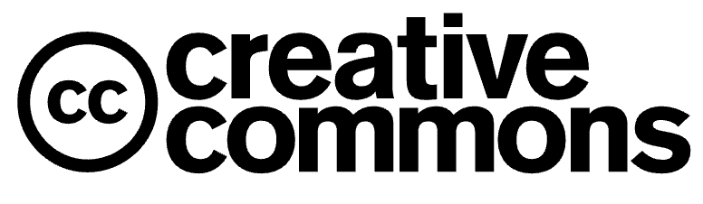
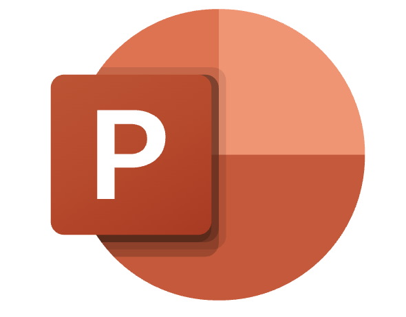
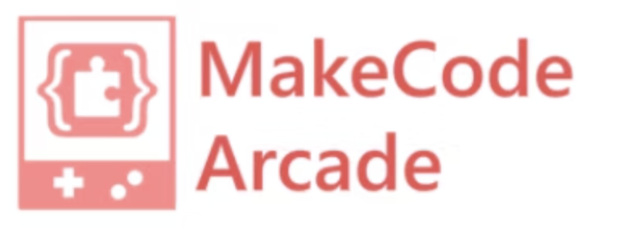
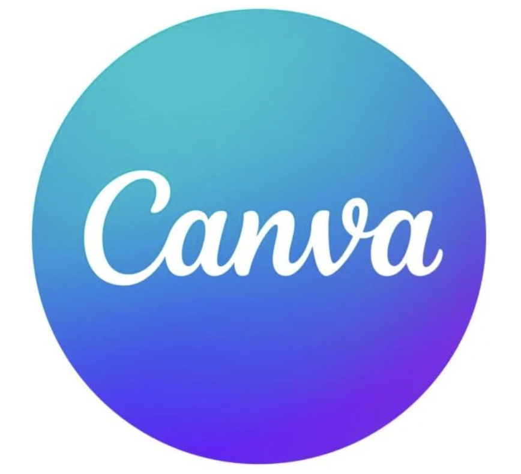

ISTE Standards for Students
What Are ISTE Standards?
The ISTE Standards for Students describe the knowledge and skills learners need to thrive in a connected, digital world. These standards empower students to become self-directed, creative problem solvers who use technology to learn deeply and ethically. The standards are not just about using tools — they’re about transforming learning through active, student-centered practices.
Empowered Learner
Students leverage technology to take an active role in choosing, achieving, and demonstrating competency in their learning goals.
Utilize Khan Academy's progress dashboards for student-led goal setting and personalized skill development tracking.
Progress tracking interface: khanacademy.org
Digital Citizen
Students recognize the rights, responsibilities, and opportunities of living in a digital world.
Create multimedia projects using properly attributed Creative Commons resources from Wikimedia Commons.
Digital citizenship in practice: creativecommons.org
Knowledge Constructor
Students critically curate resources using digital tools to build knowledge and create meaningful products.
Develop research presentations using PowerPoint's integrated citation tools and multimedia features.
Presentation design tool: microsoft.com
Innovative Designer
Students use varied technologies to identify design constraints, prototype solutions, and test iterative improvements in authentic contexts.
Design and test a recycling awareness game using MakeCode Arcade's block-based programming interface.
Game development platform: arcade.makecode.com
Computational Thinker
Students develop logical workflows and leverage automation to analyze data and solve complex problems systematically.
Program environmental sensors using micro:bit's block coding interface to collect and analyze classroom air quality data.
Physical computing toolkit: makecode.microbit.org
Creative Communicator
Students craft compelling multimedia messages tailored to specific audiences and communication goals.
Develop interactive history timelines using Canva's graphic design tools and animation features.
Design platform: canva.com
Global Collaborator
Students use collaborative technologies to work effectively with diverse teams and broaden multicultural understanding.
Co-author a global recipe book using Microsoft Teams' shared documents and real-time collaboration features.
Collaboration suite: microsoft.com/teams
Reflection
Which ISTE standard do you feel most confident in? Which one do you want to improve? Think about how you use technology in and outside of school, and how you can grow as a responsible digital learner.
ISTE Standards adapted from materials provided by the International Society for Technology in Education. Licensed under CC BY 4.0.